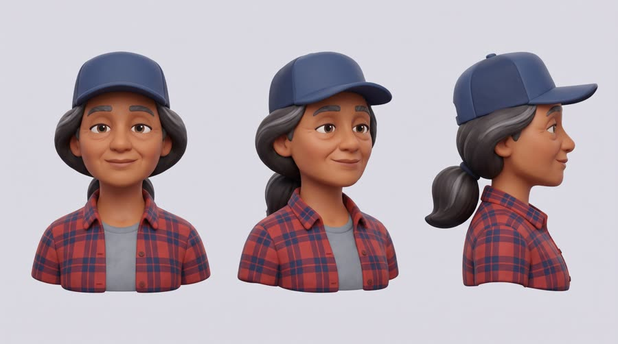
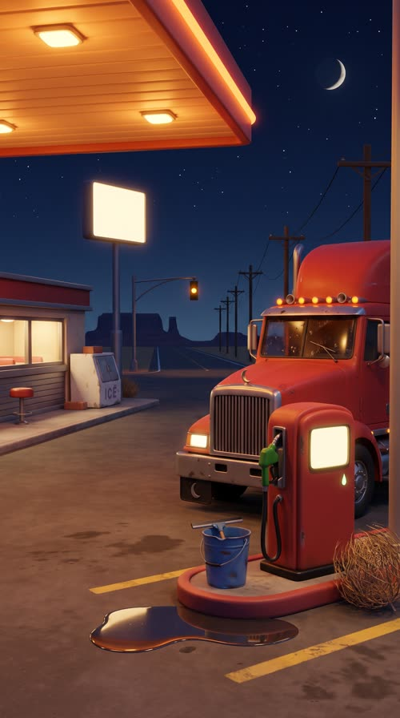
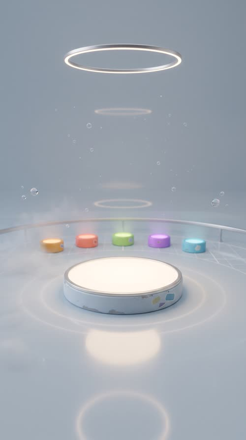
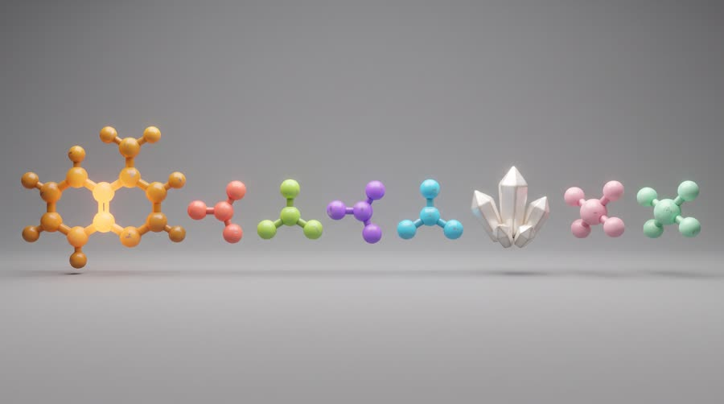
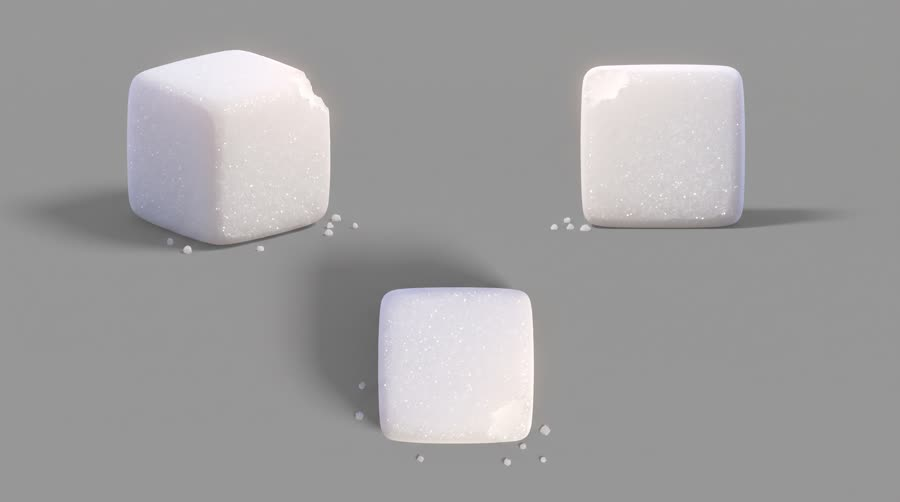
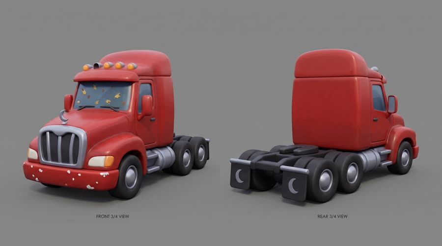

No Sugar Inside
2am at a truck stop, a long-haul driver cracks a can. It tastes sweet, but there is no sugar in it. The camera dives inside Red Bull Sugarfree to show what is actually in there.
Curiosity gap plus education: 'wait, how?' holds the viewer to the answer, and every answer is a product feature. The stylized 3D look reads as content, not an ad (the Zack D. Films channel has about 28.6M subscribers and brands now hire for the style). It sells when the mechanism is genuinely surprising and every fact is true to the product page; it fails when it becomes a spec list.
Contact sheet
One keyframe per shot, with the caption as it will appear.


Cast and world

Voice: non-speaking; one satisfied 'mm' and a laugh


World. A stylized 3D night truck stop on an empty North American highway: one diner-style canopy of light, a big rig cab, then a neutral pale grey-blue void inside the can where the cutaways and exploded views happen. Palette. Night navy and sodium orange outside; inside, the pale grey-blue void with one glow colour per ingredient: amber for caffeine, four candy colours for the B vitamins (coral, lime, violet, cyan), pearl white for taurine, soft pink and mint for the two sweeteners. The can keeps its real sky blue, silver and red.
Fictional brands. Delgado Freight (painted on the cab door as a plain shape in post, never by the model); Mile 212 Stop (the truck stop, sign blank in the model, name optional in post)
World bible
Fixed with the concept: the lore, the objects and the textures that make this world specific. Only product-adjacent props change per product.
- Rosa Delgado has driven for 22 years. Since her husband Manny died in 2021 she runs Delgado Freight alone, one truck out of El Paso, and the red cab is the same 2009 rig he bought used.
- Tonight she is hauling a reefer trailer of avocados from Laredo to Kansas City, 940 miles, due on the dock at 7am. At Mile 212 she is nine hours into an eleven hour driving limit.
- Mile 212 Stop is a 1968 fuel island with a six stool diner. The owner, Walt, has not turned the canopy lights off since the night of the 1996 blizzard, so drivers call it the lighthouse.
- The inside of the can is imagined as a calm lab: one glowing platform for the can, and a far arc of five small pedestals, one per ingredient colour, waiting to be lit as each ingredient is shown.
- The sugar cube is the only thing in this world that never gets a pedestal.
Materials. Every object in the world is a soft stylized 3D model: rounded bevels on every edge, matte painted plastic and satin painted metal, simplified shapes with specific wear painted on as scuffs, chips, stickers-as-shapes and bug spatter; liquids glow softly from inside; nothing photoreal and no readable text anywhere. The can alone is photoreal and exact.
Wear and time. 2:07am on a dry, cold desert night after a windy evening. The rig has 600 miles of bugs on the windshield, the diesel nozzle is still dripping from her fill-up, the diner is on its fourth pot of coffee and one roof clearance light has blown. Out of place: a tumbleweed jammed against the pump island. Inside the can everything is spotless until the ingredients arrive.
Signature objects



Set dressing by location
Foreground
oil-stained concrete with a painted yellow parking stripe worn down to patches; a rounded red fuel pump with a blank glowing display and a green diesel nozzle hanging in its holster, one drip at the tip; a squeegee standing in a dented blue washer-fluid bucket clipped to the pump island; a shallow puddle reflecting the orange canopy lights; a dry tumbleweed caught against the base of the pump island
Midground
the plain red big rig cab, front three-quarter, with a chrome grille and a small chrome crescent moon hood ornament; a row of five amber clearance lights along the cab roof, one of them out; a bug-spattered windshield with a wiper parked half way; black mud flaps with a small painted silver crescent moon shape; the diner's long lit window with a single round red stool visible through it; a dented white ice chest by the diner door with a brick on its lid
Background
a tall pole sign glowing plain warm white with no markings; the empty two-lane highway running straight to a dark horizon; a single amber traffic light blinking over the junction; a line of wooden telephone poles sagging with wire; flat-topped mesa silhouettes against a navy sky full of stars and a thin crescent moon
Foreground
faint concentric light rings on the pale floor around the platform; a slim brushed aluminium rim around the base of the glowing platform; a soft glossy reflection of the platform glow on the floor; a low thin haze lying just above the floor
Midground
tiny soft bubbles drifting upward through the empty air; a thin ring light hanging high above, reflected as a soft ellipse on the floor; a few small clear glass-like droplets hovering far to either side; faint drifting specks of light like dust in a beam
Background
a far arc of five small softly glowing pedestals, one amber, one coral, one lime, one violet, one cyan, small and out of focus; a faint floor grid fading into the gradient; a gentle curve where the floor meets the wall, like an infinity cove; a thin brushed aluminium rail curving along the far wall; a second, dimmer ring light far behind, reflected in the floor
- Rosa: a small brass saint medal on a bead chain hanging from the rear-view mirror, Manny's, worn smooth by thumbs; a dented stainless travel mug with a strip of red tape around the handle so nobody at the depot takes it; reading glasses tucked in her flannel shirt pocket, one arm bent and taped; a hand-knitted navy seat cushion gone flat in the middle; a turquoise ring on her right hand that clicks against the steering wheel
- Delgado Freight: a silver crescent moon over a single straight road line, red and silver. On: the cab doors, mud flaps and hood ornament (the crescent alone). Text in post: the words DELGADO FREIGHT on the cab door in S02 and S09 only, added in post
- Mile 212 Stop: a warm white circle with a single road chevron, sodium orange and warm white. On: the pole sign and pump tops, always blank in the model. Text in post: optional MILE 212 on the pole sign in S09
the buzz of the canopy lights; a diesel engine idling with a low clatter; the clunk of the fuel nozzle shutting off; wind hissing across the empty lot; the crack and hiss of the can opening; soft fizz and bubble pops inside the void; a glassy ping as the sugar cube bounces off the can wall; air brakes sighing as the rig pulls away
Beats
| Time | Beat | What happens |
|---|---|---|
| 0-3 | hook | A sliced can in a void; a sugar cube drops toward it and bounces off. The narrator: it tastes sweet, but there is no sugar in it. |
| 3-8.4 | setup | 2am at a truck stop, Rosa cracks the can in her cab; the camera dives in through the opening. |
| 8.4-21.6 | product | The x-ray tour: caffeine, then the four B vitamins, then taurine, then the two sweeteners, while the sugar cube stays locked outside the glass. |
| 21.6-25 | build | Pull back out: the whole can reassembles, label to camera. The brand line. |
| 25-27.4 | payoff | Rosa back on the dark highway, alert, dawn on the horizon. |
| 27.4-30 | cta | The can on a turntable in the void, half x-ray, tagline. |
Screenplay
61 spoken words in 30 s. Each line keeps its intent (fixed in the template) and its wording (written for this product).
| Time | Speaker | Line | Intent (template) |
|---|---|---|---|
| 0.2-2.9 | narrator (off camera) | This tastes sweet. But there's no sugar in it. fast, curious, friendly, a little conspiratorial | Hook: a surprising true fact about the product that creates a 'wait, how?' gap. |
| 3.4-5.6 | narrator (off camera) | So what's actually in there? Let's go inside. quick, playful, lifting on 'inside' | Promise the explanation and set the scene. |
| 8.6-11.4 | narrator (off camera) | First, caffeine. It helps improve concentration and alertness. clear, a beat on 'caffeine' | First part of the mechanism, the headline benefit, with an allowed claim only. |
| 11.7-15.3 | narrator (off camera) | Then B vitamins: niacin, B2, B6, B12. They help reduce tiredness. rapid list, ticking each one, then slower on the benefit · Say: B two, B six, B twelve | Second part of the mechanism with an allowed claim only. |
| 15.6-17.4 | narrator (off camera) | Plus a thousand milligrams of taurine. matter of fact, quick | A fact from the product page, no claim attached. |
| 17.8-21.4 | narrator (off camera) | And the sweet? Sucralose and acesulfame K. Not sugar. the reveal, a small grin, punch on 'not sugar' · Say: SOO-kra-lohs, ay-SESS-ul-faym KAY | Pay off the hook: answer the surprising question. |
| 22.0-24.8 | narrator (off camera) | Red Bull Sugarfree. Same benefits, without sugar. warm and certain, slower than the rest · Say: RED BULL SHUG-er-free, three clear words | Product line: name the product and its point of difference. |
| 27.7-29.6 | narrator (off camera) | Wiiings without sugar. smiling, stretched vowel · Say: WINGS, stretch the vowel slightly | Tagline in the brand's own words. |
Generation plan
U1 · 0 to 8.4 s · 9 s generation
Shots S01, S02, S03 · References: product can official, rosa card, truckstop plate, void plate, S01 keyframe as first frame
9:16 stylized 3D explainer animation, soft rounded forms, clean studio light; the can is always rendered realistic and exact. Shot 1 (0 to 3 s): in the pale grey-blue void of @Image4, the exact can from @Image1 stands upright cut away along one side to show glowing liquid behind a clear wall; a big white sugar cube tumbles in and bounces off the clear wall, snap zoom on the bounce. Shot 2 (3 to 5.8 s): inside a big rig cab at 2am at the truck stop of @Image3, @Image2 (Rosa) cracks the can open at chest height, label to camera, a small puff of mist. Shot 3 (5.8 to 9 s): fast push-in into the can's opening, the silver walls turn translucent like glass and we fly into glowing golden liquid full of bubbles. Native sound: whoosh, glassy bonk, cube skittering, can crack, cab hum, bubble rush. No speech (narration added in post). No music. No letters or numbers anywhere except the can's own label.
U2 · 8.4 to 21.6 s · 14 s generation
Shots S04, S05, S06, S07 · References: void plate, S04 keyframe as first frame
9:16 stylized 3D explainer inside a glowing pale golden sparkling liquid, continuous camera travel, one idea at a time, centred. Shot 1 (0 to 3.2 s): a glossy amber ball-and-stick molecule with two joined rings spins into centre and glows, snap zoom. Shot 2 (3.2 to 7 s): four small glossy molecule models pop in one after another, coral, lime, violet, cyan, and orbit in a ring. Shot 3 (7 to 9.2 s): a cluster of pearl white crystals dissolves into sparkling swirls. Shot 4 (9.2 to 14 s): a soft pink and a mint molecule glow side by side; slow pull back reveals the clear curved wall of the can and outside it, in the void of @Image1, the white sugar cube pressed against the glass, shut out. Keep empty space around each object. Native sound: blips on each arrival, four rising blips, crystalline tinkle, fizz, two sweet chimes, a muffled knock on glass. No speech. No music. No letters, numbers or formulas.
U3 · 21.6 to 25.0 s · 4 s generation · exact-risk (short, cheap to re-roll)
Shots S08 · References: product can official, void plate, S08 keyframe as first frame
9:16 stylized 3D explainer. Fast pull back out of the liquid; the x-ray walls solidify and the exact can from @Image1 reassembles into its complete realistic form standing upright on the glowing platform in the void of @Image2, label square to camera and undistorted, faint glow lines fading; then hold still. Keep its shape, colours, wordmark and bulls exactly as @Image1. Native sound: reverse whoosh, a satisfying metallic seal click, soft bass hit. No speech (narration added in post). No music. No text.
U4 · 25.0 to 30 s · 5 s generation · exact-risk (short, cheap to re-roll)
Shots S09, S10 · References: product can official, rosa card, truckstop plate, void plate, S10 keyframe as first frame
9:16 stylized 3D explainer. Shot 1 (0 to 2.4 s): low behind a big rig with a plain red cab pulling away down an empty straight highway toward a thin orange line of dawn, wheels on the road, upright frame, level horizon; @Image2 (Rosa) smiling and alert in the side mirror. Shot 2 (2.4 to 5 s): the exact can from @Image1 upright on the glowing platform in the void of @Image4, label to camera, only its far right edge cut away to show glowing liquid, small amber, coral, lime, violet and cyan molecules orbiting it, slow 15 degree turntable move, empty space above. Native sound: diesel rumble, air brake release, a short horn, a final soft chime. No speech. No music. No text except the can's own label.
Sound, music, voice, captions
| 0 to 8.4 s | curious | Plucky pizzicato synth and soft finger snaps, 110 bpm, a question-mark motif on the hook, drops out for the can crack. |
| 8.4 to 21.6 s | tour | Same motif with light marimba and a soft kick, a small rising arpeggio on each new ingredient, ducked 8 dB under narration. |
| 21.6 to 30 s | reveal | Brief lift and a warm chord on the reassembled can, a bright button on the tagline. |
Added sound
- 1.6 s: glassy bonk of the sugar cube bouncing off (the visual gag is the hook; the sound sells it)
- 3.8 s: can crack (the product moment in the human world must register)
- 22.4 s: metallic seal click as the can reassembles (marks the return to the real product for the brand line)
- narrator: one fast, friendly, curious narrator (American, mid-tenor, 1.1x pace) as a single TTS track in post; units carry no speech; the brand line with the phonetic RED BULL SHUG-er-free lands over the short exact risk unit U3; ingredient names use the phonetics in the script
font: Montserrat ExtraBold, size: 7.2% of frame height, color: #FFFFFF, active word: #FFE14D yellow on the spoken word, shadow: none, 9px black stroke outline, position: centre, 58% down the frame, never over the cutaway subject, max words on screen: 2, box: False, case: uppercase, motion: each word pops in at 120% and settles to 100% over 3 frames, callout labels: ingredient callouts in post: white rounded pill with black text and a thin leader line to the 3D part
Post text- 8.8 to 11.6 s: CAFFEINE / (white rounded pill label with black Montserrat Bold text and a thin leader line to the amber molecule)
- 12.0 to 15.4 s: NIACIN / B2 / B6 / B12 / (four small pills, one per coloured molecule, each popping in on its blip)
- 15.6 to 17.6 s: TAURINE 1000 mg / (pill label beside the crystals)
- 18.0 to 21.6 s: SUCRALOSE / ACESULFAME K / (two pills on the pink and mint molecules; a small red 'NO' stamp shape next to the sugar cube outside the wall)
- 27.6 to 30 s: Red Bull Sugarfree / Wiiings without sugar (Montserrat ExtraBold white with black stroke in the empty space above the can, pop in 3 frames)
Adaptation contract
How this same concept takes any physical product.
| Product type | Where it sits in the story | Scale |
|---|---|---|
| ingested | the camera dives into the opening and the drink's ingredients float out one by one | cutaway, can scale to molecule scale |
| applied | the tube or bottle is sliced in half and the formula's actives float out one by one | cutaway, hand scale to micro |
| worn | the garment or shoe peels apart into its layers, each material explained in turn | exploded view, body scale |
| handheld | the gadget's shell goes x-ray and its parts float out in an exploded view | exploded view, hand scale |
| carried | the bag's walls go transparent to show its compartments, frame and fabrics | cutaway, hand to lap |
| home | the object goes x-ray in the room to show how it works inside | cutaway, room scale |
| consumable | the refill is sliced open and its contents are explained piece by piece | cutaway, hand scale |
| swap_props | The molecule set and the rejected sugar cube are product-specific: swap them per product for its real ingredients and the one thing it leaves out. Rosa, the truck stop, the cab and the void stay. | props only |
Style bible
Look. Clean stylized 3D (soft rounded forms, simplified materials, slightly toy-like proportions on people, realistic proportions on the product). Every explanation is a cutaway: the product sliced in half, glass-like x-ray walls, parts floating out in an exploded view on a neutral void. One idea per shot, centred, with generous empty space for post labels. Continuous camera travel links shots (fly into the opening, pull back out), never flat cuts between unrelated spaces.
Camera. Virtual camera with purposeful moves: fast push-in dives through openings, orbiting exploded views, snap zooms (6 frames) on each new part, pull-back reveals. Always centred subject, eye level or 30 degree top angle. No handheld.
Light and texture. Soft even studio three-point light with a gentle rim; inside the product, the liquid glows from within in the product's colour. Colour-coded glow per ingredient. Smooth subsurface materials, soft ambient occlusion, very mild bloom, no film grain, no photoreal skin pores. Product label rendered crisp and exact even inside the stylized world.
Pacing. Fast: hook fact in the first 2 seconds, a new visual every 2 to 3 seconds timed to the narration, snap zoom on each new noun, one held product beat at least 1.5 s at the brand line, then pull back to the human payoff.
Sound. Narration is the spine: one fast, curious, friendly TTS voice track in post. Units carry native whooshes, glassy clinks, pops, bubble swirls and small UI-like blips for each part reveal. Light playful underscore (plucky synth and soft percussion) that ducks under the voice.
Known failures.
- the model writes its own labels and chemical formulas in frame: say no letters or numbers anywhere except the product label; all callouts are added in post
- the product loses its label when rendered stylized: say the can is realistic and exact while the world is stylized
- cutaways show the inside of a human body: never; explanations stay inside the product, the only body shown is the character from outside
- molecules turn into random clip art: specify ball-and-stick models with a set colour per ingredient
- characters change look between shots: keep one stylized character and always pass the character sheet
- vehicles in wide shots come back rotated: frame the truck from behind or head-on, upright vertical composition, level horizon
- too many parts at once reads as clutter: one ingredient per shot, centred
- the rejected sugar cube comes back lodged inside the can cutaway, reading as 'sugar inside': say it is clearly separated by empty space, flying away, and does not touch the can
- a motion trail on the flying sugar cube can be drawn back across the can, which reads as the cube touching it: put the cube high in the far corner and say its arc trails away and never crosses the can
- the richer void plate can put a blank silver can on the platform, which then leaks into every ingredient shot: say the platform in the plate is completely empty, and keep product cans out of prop sheets
Claims and cost
Claims used (all from the product page): Caffeine helps to improve concentration and increase alertness; B-group vitamins contribute to the reduction of tiredness and fatigue; Same benefits of the original Energy Drink, without sugar; Facts from the product page: 1000 mg taurine; niacin, B2, B6, B12; sweetened with sucralose and acesulfame K
Video estimate: 32 s of generation at $0.27/s = $8.64 first pass, $16 to 24 with retakes, plus about $1.0 music.